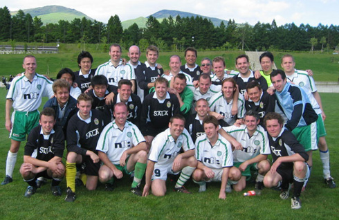

|  12/13th June, 6th ALT Higashi Nihon TournamentThe Japan East ALT Tourney finishied with an excellent match between two great teams on Sunday in Nagano with Sala (aka Funabashi Rex) getting the better of Kanto Celts. 4-0 the final score on a beautiful grass pitch, surrounded by beautiful tree covered mountains, on a beautiful Sunday afternoon. Football as it is supposed to be played.
Celts played very well first half as they enjoyed the luxury of the surface and the mountain air and held Sala well before Sala got in their first goal. On form Sala then tightened the screws on the Celts as they too enjoyed the glorious world cup quality grass. It was very even first half but second half went the way of Sala with tidy finishes and many attempts on goal. The Celts keeper saved many other shots but couldnt hold out Sala forever.
Sala went the whole tournament with only conceeding 1 goal.
Results were Sat 4-0, 4-0, 2-1 for Sala to finish top seed and then followed up on Sunday with 4-0 (qtr), 2-0 (semi) & 4-0 (final).
The results mean that both Sala (Funabashi Rex) and Kanto Celts will play in the ALL JAPAN ALT Final Tournament to decide who will be the National Champions to be held most likely in July in a J1 stadium near Tokyo. Good Luck to both teams.
The lead didn't last that long though. The Celts pulled back with a blockbuster of a shot from 30 yards out. However, Shane started to make headway and their efforts were rewarded with
Report by Brian Gallagher (SALA FC) |